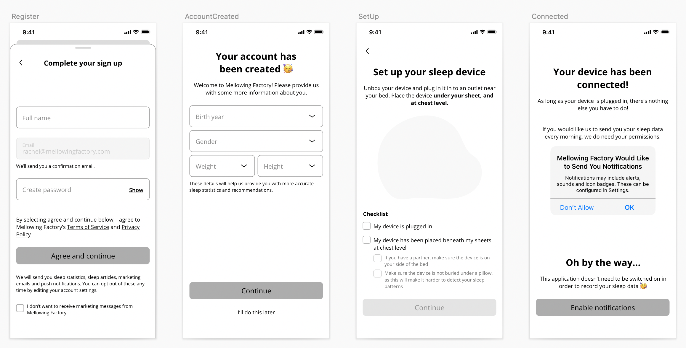

Mellowing Factory
Seoul, May 2021 - Current
Overview
Mellowing Factory is a native iOS application that allows people to track their sleep every night and provide statistics on overall sleep quality.
We have algorithms that can track sleep quality by recording sound throughout the night, and another algorithm that tracks at a higher rate of accuracy with an iOT device that an individual can purchase and place on their mattress.
Title
Product Lead and Co-Founder
The iOT device
The device is a flat sensor that is placed beneath your bedsheets and automatically sends information to your application via wifi and bluetooth. It records your sleep cycle (light sleep, REM, deep sleep) at a much higher accuracy than recording via sound and lets individuals assess:
- Sleep quality
- Resting heart rate
- Resting respiratory rate
Initially the application was meant to support the device, but because we want to expand the market, we have an application that can also track your sleep by recording throughout the night (no device necessary).
The application
The application had to be designed primarily with a "dark mode" palette, since the application is likely to be used right before going to sleep.
It was also an app that was displaying technical stats, so most of the work was centered around copywriting and making sure the user understood the statistics they were receiving each night.
We went through quite a lot of iterations, including thinking about how to onboard users if they purchased the device. It is still a work in progress and the plan is to hit the appstore by November.
A version of onboarding if a user has an iOT device
Want to learn more about Talentspace? There's more information here.